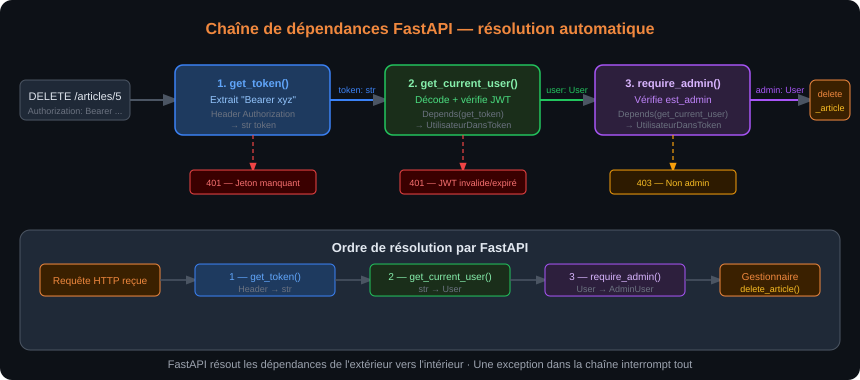
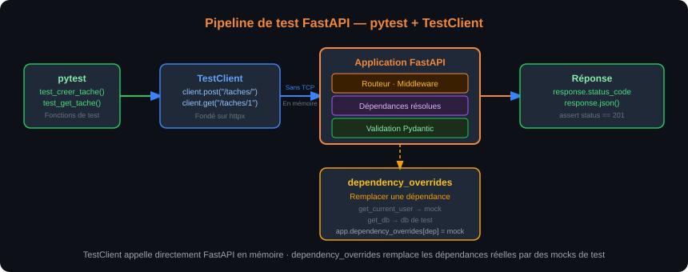

À l'issue de ce chapitre, chaque stagiaire est capable de :
- Décrire le principe de l'injection de dépendances et l'implémenter avec
Depends() - Implémenter le flux OAuth2 Password avec génération et validation de jetons JWT
- Protéger des routes avec une dépendance d'authentification, en distinguant 401 et 403
- Configurer le middleware CORS pour autoriser les appels cross-origin d'un frontend
- Créer et envoyer des tâches de fond (
BackgroundTasks) sans bloquer la réponse - Écrire des tests unitaires et d'intégration pour une API FastAPI avec
pytestetTestClient - Rédiger un
Dockerfilepour une application FastAPI et l'exécuter avec Docker Compose
Principe de l'injection de dépendances
L'injection de dépendances (Dependency Injection, DI) est un patron de conception dans lequel un composant reçoit ses dépendances de l'extérieur plutôt que de les instancier lui-même. FastAPI fournit un système de DI déclaratif : une fonction peut déclarer qu'elle "dépend" d'une autre fonction, et FastAPI s'occupe d'appeler la dépendance avant d'appeler le gestionnaire, en lui passant le résultat.
from fastapi import Depends, FastAPI
app = FastAPI()
# Dépendance — fonction ordinaire qui retourne quelque chose
def get_query_params(q: str = "", page: int = 1, taille: int = 10):
return {"q": q, "page": page, "taille": taille}
# Gestionnaire qui consomme la dépendance via Depends()
@app.get("/recherche")
def recherche(params: dict = Depends(get_query_params)):
return {"resultats": [], "pagination": params}
L'avantage est la réutilisabilité : get_query_params peut être injectée dans dix gestionnaires différents sans dupliquer le code de lecture et de validation des paramètres de pagination.
Dépendances chaînées
Les dépendances peuvent dépendre d'autres dépendances, formant une chaîne que FastAPI résout automatiquement.
from fastapi import Depends, HTTPException, Header
from typing import Optional
# Dépendance de bas niveau — extraire le jeton de l'en-tête
def get_token(authorization: Optional[str] = Header(default=None)) -> str:
if authorization is None or not authorization.startswith("Bearer "):
raise HTTPException(status_code=401, detail="Jeton manquant")
return authorization.removeprefix("Bearer ").strip()
# Dépendance de niveau intermédiaire — valider le jeton et retourner l'utilisateur
def get_current_user(token: str = Depends(get_token)) -> dict:
# La validation JWT complète est décrite dans la section suivante
user = verifier_jeton(token) # Lève 401 si invalide
return user
# Dépendance de haut niveau — vérifier que l'utilisateur est admin
def require_admin(user: dict = Depends(get_current_user)) -> dict:
if not user.get("est_admin"):
raise HTTPException(status_code=403, detail="Accès réservé aux administrateurs")
return user
# Utilisation dans un gestionnaire
@app.delete("/articles/{id}")
def delete_article(article_id: int, admin: dict = Depends(require_admin)):
# Ici, admin est garanti admin (sinon 401 ou 403 levé avant)
...

Le schéma ci-dessus illustre la chaîne de résolution des dépendances : FastAPI appelle get_token en premier, passe son résultat à get_current_user, passe son résultat à require_admin, puis enfin exécute delete_article. Si l'une des dépendances lève une HTTPException, FastAPI interrompt la chaîne et retourne l'erreur sans jamais atteindre le gestionnaire.
Dépendances de classe
Pour les dépendances configurables, un pattern courant est d'utiliser une classe avec __call__ :
class VerifierRole:
def __init__(self, role_requis: str):
self.role_requis = role_requis
def __call__(self, user: dict = Depends(get_current_user)) -> dict:
if user.get("role") != self.role_requis:
raise HTTPException(
status_code=403,
detail=f"Rôle '{self.role_requis}' requis"
)
return user
# Crée des dépendances paramétrées réutilisables
require_editor = VerifierRole(role_requis="editeur")
require_admin = VerifierRole(role_requis="admin")
@app.post("/articles/")
def create_article(article: ArticleCreation, user: dict = Depends(require_editor)):
...
@app.delete("/articles/{id}")
def delete_article(article_id: int, user: dict = Depends(require_admin)):
...
Vocabulaire : authentification et autorisation
Deux concepts souvent confondus dans les équipes de développement.
L'authentification répond à la question "Qui êtes-vous ?". Elle vérifie l'identité de l'appelant — le plus souvent en lui demandant un couple identifiant/mot de passe, ou en vérifiant un jeton que l'appelant présente.
L'autorisation répond à la question "Avez-vous le droit de faire cela ?". Elle vérifie que l'identité confirmée possède les permissions nécessaires pour effectuer l'opération demandée.
FastAPI fournit les outils pour implémenter les deux, sans imposer de stratégie particulière. La section suivante implémente le flux OAuth2 Password — le plus courant pour les API REST avec authentification par identifiant/mot de passe.
JWT — JSON Web Token
Un JWT est un jeton signé numériquement qui encode un payload JSON. Il est composé de trois parties séparées par des points :
- Header : algorithme de signature et type de jeton
- Payload : données (claims) — identifiant utilisateur, rôle, date d'expiration
- Signature : hash du header + payload avec une clé secrète
eyJhbGciOiJIUzI1NiIsInR5cCI6IkpXVCJ9.
eyJzdWIiOiJ1c2VyXzQyIiwiZXhwIjoxNzM1MDAwMDAwfQ.
SflKxwRJSMeKKF2QT4fwpMeJf36POk6yJV_adQssw5c
La propriété clé : le serveur peut vérifier un JWT sans l'avoir stocké (stateless). Il suffit de re-calculer la signature avec la clé secrète et de comparer. Si elle correspond et si le jeton n'est pas expiré, le jeton est valide.
Le payload d'un JWT est encodé en Base64, pas chiffré — n'importe qui peut le décoder sans la clé secrète. Ne jamais y mettre de mot de passe, de clé privée ou de données personnelles sensibles. Le payload sert à transporter des identifiants et des droits, pas des secrets.
Implémentation complète — OAuth2 Password Flow avec JWT
pip install "python-jose[cryptography]" "passlib[bcrypt]"
# auth.py — module d'authentification complet
from datetime import datetime, timedelta
from typing import Optional
from fastapi import Depends, HTTPException, status
from fastapi.security import OAuth2PasswordBearer, OAuth2PasswordRequestForm
from jose import JWTError, jwt
from passlib.context import CryptContext
from pydantic import BaseModel
# Configuration — en production, charger depuis les variables d'environnement
SECRET_KEY = "une-cle-secrete-longue-et-aleatoire-a-changer-en-production"
ALGORITHM = "HS256"
EXPIRE_MINUTES = 30
# Hachage des mots de passe avec bcrypt
pwd_context = CryptContext(schemes=["bcrypt"], deprecated="auto")
# Schéma OAuth2 Password — l'URL du endpoint de login
oauth2_scheme = OAuth2PasswordBearer(tokenUrl="/auth/token")
# --- Modèles ---
class TokenReponse(BaseModel):
access_token: str
token_type: str
class UtilisateurDansToken(BaseModel):
username: str
est_admin: bool = False
# --- Base de données simulée (remplacée par SQLAlchemy au Chapitre 5) ---
UTILISATEURS_DB = {
"alice": {
"username": "alice",
"hashed_password": pwd_context.hash("secret"),
"est_admin": False,
},
"bob": {
"username": "bob",
"hashed_password": pwd_context.hash("admin123"),
"est_admin": True,
},
}
# --- Fonctions utilitaires ---
def verifier_mot_de_passe(plain: str, hashed: str) -> bool:
return pwd_context.verify(plain, hashed)
def creer_jeton(data: dict, expire_delta: Optional[timedelta] = None) -> str:
payload = data.copy()
expire = datetime.utcnow() + (expire_delta or timedelta(minutes=EXPIRE_MINUTES))
payload["exp"] = expire
return jwt.encode(payload, SECRET_KEY, algorithm=ALGORITHM)
def authentifier_utilisateur(username: str, password: str) -> Optional[dict]:
user = UTILISATEURS_DB.get(username)
if not user or not verifier_mot_de_passe(password, user["hashed_password"]):
return None
return user
# --- Dépendances d'authentification ---
async def get_current_user(token: str = Depends(oauth2_scheme)) -> UtilisateurDansToken:
credentials_exception = HTTPException(
status_code=status.HTTP_401_UNAUTHORIZED,
detail="Jeton invalide ou expiré",
headers={"WWW-Authenticate": "Bearer"},
)
try:
payload = jwt.decode(token, SECRET_KEY, algorithms=[ALGORITHM])
username: str = payload.get("sub")
if username is None:
raise credentials_exception
except JWTError:
raise credentials_exception
user = UTILISATEURS_DB.get(username)
if user is None:
raise credentials_exception
return UtilisateurDansToken(**user)
async def require_admin(
current_user: UtilisateurDansToken = Depends(get_current_user),
) -> UtilisateurDansToken:
if not current_user.est_admin:
raise HTTPException(
status_code=status.HTTP_403_FORBIDDEN,
detail="Droits administrateur requis",
)
return current_user
# routers/auth.py — endpoint de login
from fastapi import APIRouter, Depends, HTTPException, status
from fastapi.security import OAuth2PasswordRequestForm
from auth import authentifier_utilisateur, creer_jeton, TokenReponse
router = APIRouter(prefix="/auth", tags=["Authentification"])
@router.post("/token", response_model=TokenReponse)
async def login(form_data: OAuth2PasswordRequestForm = Depends()):
user = authentifier_utilisateur(form_data.username, form_data.password)
if not user:
raise HTTPException(
status_code=status.HTTP_401_UNAUTHORIZED,
detail="Identifiant ou mot de passe incorrect",
headers={"WWW-Authenticate": "Bearer"},
)
token = creer_jeton({"sub": user["username"]})
return {"access_token": token, "token_type": "bearer"}
# Utilisation dans un routeur protégé
from auth import get_current_user, require_admin, UtilisateurDansToken
@router.get("/profil", response_model=UtilisateurDansToken)
async def get_profil(user: UtilisateurDansToken = Depends(get_current_user)):
"""Route protégée — nécessite un jeton valide."""
return user
@router.delete("/articles/{id}", status_code=204)
async def delete_article(
article_id: int,
admin: UtilisateurDansToken = Depends(require_admin),
):
"""Route protégée — nécessite un jeton admin."""
...
SECRET_KEY ne doit jamais être codée en dur dans le code source. Utiliser une variable d'environnement ou un gestionnaire de secrets (AWS Secrets Manager, HashiCorp Vault). Générer une clé avec : openssl rand -hex 32. Une clé exposée dans Git compromet tous les jetons émis.
Tester l'authentification dans Swagger UI
FastAPI intègre nativement le bouton Authorize dans Swagger UI quand OAuth2PasswordBearer est utilisé. Cliquer sur Authorize, saisir le nom d'utilisateur et le mot de passe, valider — Swagger UI injecte automatiquement le jeton Bearer dans toutes les requêtes suivantes.
Principe du middleware
Un middleware est une couche de traitement qui s'interpose entre la réception d'une requête et son envoi au gestionnaire, et/ou entre la réponse du gestionnaire et son envoi au client. C'est le bon endroit pour les préoccupations transversales : logging, mesure du temps de réponse, ajout d'en-têtes, limitation de débit.
import time
from fastapi import FastAPI, Request
app = FastAPI()
@app.middleware("http")
async def ajouter_duree_traitement(request: Request, call_next):
debut = time.perf_counter()
response = await call_next(request)
duree = time.perf_counter() - debut
response.headers["X-Process-Time"] = f"{duree:.4f}s"
return response
call_next est une coroutine qui appelle le prochain middleware (ou le gestionnaire final) dans la chaîne. Le middleware peut modifier la requête avant l'appel et la réponse après.
CORS — Cross-Origin Resource Sharing
Le CORS est un mécanisme de sécurité des navigateurs qui bloque les requêtes HTTP vers un domaine différent de celui de la page web en cours. Si un frontend React sur localhost:3000 appelle une API FastAPI sur localhost:8000, le navigateur bloque la requête — à moins que le serveur ne déclare explicitement autoriser ces origines.
from fastapi import FastAPI
from fastapi.middleware.cors import CORSMiddleware
app = FastAPI()
app.add_middleware(
CORSMiddleware,
allow_origins=[
"http://localhost:3000", # Frontend React en développement
"https://www.monapp.fr", # Frontend en production
],
allow_credentials=True, # Autorise les cookies cross-origin
allow_methods=["GET", "POST", "PUT", "PATCH", "DELETE", "OPTIONS"],
allow_headers=["*"], # Autorise tous les en-têtes
)
allow_origins=["*"] en production avec allow_credentials=Trueallow_origins=["*"] autorise n'importe quel domaine, ce qui annule la protection CORS. Combiné avec allow_credentials=True (qui autorise les cookies), cela crée une faille de sécurité critique (attaques CSRF). En développement, il est toléré ; en production, toujours lister explicitement les origines autorisées.
Exécuter une tâche après la réponse
BackgroundTasks permet d'exécuter une ou plusieurs fonctions après que la réponse a été envoyée au client, dans le même processus. C'est adapté pour des tâches légères qui ne doivent pas bloquer la réponse : envoi d'un email de confirmation, écriture dans un journal, mise à jour d'un cache.
from fastapi import APIRouter, BackgroundTasks
import smtplib
router = APIRouter(prefix="/articles", tags=["Articles"])
def envoyer_email_confirmation(destinataire: str, titre_article: str):
"""Fonction exécutée en arrière-plan après la réponse."""
# Simulation d'un envoi email (en production : utiliser une bibliothèque async)
print(f"Email envoyé à {destinataire} : article '{titre_article}' créé avec succès")
@router.post("/", response_model=ArticleReponse, status_code=201)
async def create_article(
article: ArticleCreation,
background_tasks: BackgroundTasks,
user: UtilisateurDansToken = Depends(get_current_user),
):
# 1. Créer l'article
nouvel_article = {"id": 1, **article.model_dump()}
# 2. Planifier la tâche de fond (exécutée APRÈS la réponse)
background_tasks.add_task(
envoyer_email_confirmation,
destinataire=f"{user.username}@exemple.com",
titre_article=article.titre,
)
# 3. Retourner immédiatement la réponse (l'email est envoyé après)
return nouvel_article
BackgroundTasks est adapté aux tâches courtes et non critiques dans le même processus. Pour des tâches longues, distribuées ou rejouer-ables en cas d'échec, utiliser une file de messages (Celery + Redis, RQ, ARQ). La différence est cruciale : si le processus FastAPI redémarre pendant une BackgroundTask, la tâche est perdue.
Structure des tests
FastAPI fournit un TestClient fondé sur httpx qui permet d'appeler l'application directement, sans serveur HTTP réel. Les tests sont des fonctions pytest ordinaires.
api-taches/
├── main.py
├── routers/
├── schemas/
├── tests/
│ ├── __init__.py
│ ├── conftest.py ← Fixtures partagées
│ └── test_taches.py ← Tests des routes /taches
└── requirements.txt
pip install pytest httpx
Fixtures et TestClient
# tests/conftest.py
import pytest
from fastapi.testclient import TestClient
from main import app
@pytest.fixture
def client():
"""TestClient réinitialisé pour chaque test."""
with TestClient(app) as c:
yield c
@pytest.fixture
def token_valide(client):
"""Obtient un jeton JWT valide pour les tests des routes protégées."""
response = client.post(
"/auth/token",
data={"username": "alice", "password": "secret"}
)
return response.json()["access_token"]
# tests/test_taches.py
def test_creer_tache(client):
response = client.post(
"/taches/",
json={"titre": "Apprendre FastAPI", "priorite": 2}
)
assert response.status_code == 201
data = response.json()
assert data["titre"] == "Apprendre FastAPI"
assert data["priorite"] == 2
assert data["terminee"] is False
assert "id" in data
assert "date_creation" in data
def test_creer_tache_titre_trop_court(client):
response = client.post("/taches/", json={"titre": "AB"})
assert response.status_code == 422
def test_get_tache_inexistante(client):
response = client.get("/taches/9999")
assert response.status_code == 404
def test_lister_taches(client):
# Créer deux tâches
client.post("/taches/", json={"titre": "Tâche un", "terminee": False})
client.post("/taches/", json={"titre": "Tâche deux", "terminee": True})
# Lister toutes
response = client.get("/taches/")
assert response.status_code == 200
assert len(response.json()) >= 2
# Filtrer les non-terminées
response = client.get("/taches/?terminee=false")
assert all(t["terminee"] is False for t in response.json())
def test_route_protegee_sans_jeton(client):
response = client.get("/profil")
assert response.status_code == 401
def test_route_protegee_avec_jeton(client, token_valide):
response = client.get(
"/profil",
headers={"Authorization": f"Bearer {token_valide}"}
)
assert response.status_code == 200
assert response.json()["username"] == "alice"
# Lancer les tests
pytest tests/ -v
# Avec rapport de couverture
pip install pytest-cov
pytest tests/ --cov=. --cov-report=term-missing

Le schéma ci-dessus illustre le flux de test : TestClient appelle directement l'application FastAPI en mémoire (sans port TCP), les dépendances sont résolues normalement, la réponse est retournée synchroniquement à pytest. Des fixtures peuvent remplacer certaines dépendances par des mocks via app.dependency_overrides.
Remplacer des dépendances dans les tests
# Remplacer la dépendance d'authentification par un utilisateur de test
from auth import get_current_user, UtilisateurDansToken
def override_get_current_user():
return UtilisateurDansToken(username="alice_test", est_admin=False)
app.dependency_overrides[get_current_user] = override_get_current_user
# Après les tests, nettoyer les overrides
app.dependency_overrides.clear()
Dockerfile pour FastAPI
# Dockerfile
FROM python:3.11-slim
WORKDIR /app
# Copier et installer les dépendances en premier (couche mise en cache)
COPY requirements.txt .
RUN pip install --no-cache-dir -r requirements.txt
# Copier le code source
COPY . .
# Exposer le port de l'application
EXPOSE 8000
# Démarrer avec Gunicorn (multi-processus) + Uvicorn (worker ASGI)
CMD ["gunicorn", "main:app", \
"--workers", "4", \
"--worker-class", "uvicorn.workers.UvicornWorker", \
"--bind", "0.0.0.0:8000"]
pip install gunicorn
pip freeze > requirements.txt
Uvicorn seul est monoprocessus — un processus signifie qu'un seul CPU est utilisé. En production, Gunicorn (gestionnaire de processus) lance plusieurs workers Uvicorn, utilisant tous les cœurs disponibles. La règle empirique : 2 * nombre_de_CPU + 1 workers.
Docker Compose — stack complète
# docker-compose.yml
services:
api:
build: .
ports:
- "8000:8000"
environment:
- SECRET_KEY=${SECRET_KEY}
- DATABASE_URL=${DATABASE_URL}
volumes:
- .:/app # Rechargement automatique en développement
restart: unless-stopped
# Base de données PostgreSQL (utilisée au Chapitre 5)
db:
image: postgres:16-alpine
environment:
POSTGRES_DB: api_db
POSTGRES_USER: api_user
POSTGRES_PASSWORD: api_password
volumes:
- postgres_data:/var/lib/postgresql/data
ports:
- "5432:5432"
volumes:
postgres_data:
# Construire et lancer
docker compose up --build
# En arrière-plan
docker compose up -d
# Voir les logs
docker compose logs -f api
# Arrêter
docker compose down
Variables d'environnement et configuration
Pour les paramètres qui changent entre les environnements (développement, staging, production), utiliser pydantic-settings pour les charger depuis des variables d'environnement ou un fichier .env.
# config.py
from pydantic_settings import BaseSettings
class Settings(BaseSettings):
app_name: str = "API Catalogue"
secret_key: str # Obligatoire — pas de valeur par défaut
algorithm: str = "HS256"
expire_minutes: int = 30
database_url: str = "sqlite:///./app.db"
class Config:
env_file = ".env" # Chargé automatiquement si présent
settings = Settings() # Lit depuis l'environnement ou .env
# .env (ne pas versionner — ajouter à .gitignore)
SECRET_KEY=une-cle-secrete-longue-et-aleatoire
DATABASE_URL=postgresql://api_user:api_password@db:5432/api_db
# Utilisation dans auth.py
from config import settings
token = jwt.encode(payload, settings.secret_key, algorithm=settings.algorithm)
.envLe fichier .env contient des secrets (clés, mots de passe, tokens). Il ne doit jamais apparaître dans Git. Ajouter .env à .gitignore. Partager les noms des variables via un fichier .env.example avec des valeurs fictives — jamais les vraies valeurs.
Exercice 1 — Sécuriser une API avec JWT
Reprenez l'API de tâches du Chapitre 2 et ajoutez une couche d'authentification JWT complète.
Travail à réaliser :
- Installez
python-jose[cryptography],passlib[bcrypt]etpydantic-settings - Créez un module
auth.pyavec : - Deux utilisateurs en mémoire (
alice/secretnon-admin,bob/admin123admin) - Un endpoint
POST /auth/tokenretournant un JWT - Une dépendance
get_current_userqui valide le JWT - Une dépendance
require_adminqui vérifie le rôle admin - Protégez les routes :
GET /tachesetGET /taches/{id}— utilisateur authentifié uniquementDELETE /taches/{id}— administrateur uniquementPOST /tachesetPATCH /taches/{id}— utilisateur authentifié
Critères de validation :
POST /auth/tokenavec les bons credentials retourne un JWTGET /tachessans jeton retourne401GET /tachesavec le jeton d'alice retourne200DELETE /taches/1avec le jeton d'alice retourne403DELETE /taches/1avec le jeton de bob retourne204- Swagger UI affiche le bouton Authorize et permet de s'authentifier
Aide — pas à pas guidé
Étape 1 — Installer les dépendances
pip install "python-jose[cryptography]" "passlib[bcrypt]" "pydantic-settings"
pip freeze > requirements.txt
Étape 2 — Créer auth.py
# auth.py
from datetime import datetime, timedelta
from typing import Optional
from fastapi import Depends, HTTPException, status
from fastapi.security import OAuth2PasswordBearer, OAuth2PasswordRequestForm
from jose import JWTError, jwt
from passlib.context import CryptContext
from pydantic import BaseModel
SECRET_KEY = "formation-dawan-clé-de-développement-seulement"
ALGORITHM = "HS256"
EXPIRE_MINUTES = 30
pwd_context = CryptContext(schemes=["bcrypt"], deprecated="auto")
oauth2_scheme = OAuth2PasswordBearer(tokenUrl="/auth/token")
class TokenReponse(BaseModel):
access_token: str
token_type: str
class UtilisateurDansToken(BaseModel):
username: str
est_admin: bool = False
UTILISATEURS_DB = {
"alice": {"username": "alice", "hashed_password": pwd_context.hash("secret"), "est_admin": False},
"bob": {"username": "bob", "hashed_password": pwd_context.hash("admin123"), "est_admin": True},
}
def authentifier(username: str, password: str) -> Optional[dict]:
user = UTILISATEURS_DB.get(username)
if not user or not pwd_context.verify(password, user["hashed_password"]):
return None
return user
def creer_jeton(data: dict) -> str:
payload = data.copy()
payload["exp"] = datetime.utcnow() + timedelta(minutes=EXPIRE_MINUTES)
return jwt.encode(payload, SECRET_KEY, algorithm=ALGORITHM)
async def get_current_user(token: str = Depends(oauth2_scheme)) -> UtilisateurDansToken:
exc = HTTPException(status_code=401, detail="Jeton invalide",
headers={"WWW-Authenticate": "Bearer"})
try:
payload = jwt.decode(token, SECRET_KEY, algorithms=[ALGORITHM])
username = payload.get("sub")
if not username:
raise exc
except JWTError:
raise exc
user = UTILISATEURS_DB.get(username)
if not user:
raise exc
return UtilisateurDansToken(**user)
async def require_admin(user: UtilisateurDansToken = Depends(get_current_user)) -> UtilisateurDansToken:
if not user.est_admin:
raise HTTPException(status_code=403, detail="Droits admin requis")
return user
Étape 3 — Ajouter le routeur d'authentification
Créez routers/auth.py :
from fastapi import APIRouter, Depends, HTTPException
from fastapi.security import OAuth2PasswordRequestForm
from auth import authentifier, creer_jeton, TokenReponse
router = APIRouter(prefix="/auth", tags=["Authentification"])
@router.post("/token", response_model=TokenReponse)
async def login(form_data: OAuth2PasswordRequestForm = Depends()):
user = authentifier(form_data.username, form_data.password)
if not user:
raise HTTPException(status_code=401, detail="Identifiants incorrects",
headers={"WWW-Authenticate": "Bearer"})
return {"access_token": creer_jeton({"sub": user["username"]}), "token_type": "bearer"}
Étape 4 — Protéger les routes de tâches
Dans routers/taches.py, importez les dépendances et ajoutez-les :
from auth import get_current_user, require_admin, UtilisateurDansToken
@router.get("/", response_model=List[TacheReponse])
def list_taches(..., user: UtilisateurDansToken = Depends(get_current_user)):
...
@router.post("/", response_model=TacheReponse, status_code=201)
def create_tache(tache: TacheCreation, user: UtilisateurDansToken = Depends(get_current_user)):
...
@router.delete("/{tache_id}", status_code=204)
def delete_tache(tache_id: int, admin: UtilisateurDansToken = Depends(require_admin)):
...
Étape 5 — Inclure le routeur dans main.py
from routers import auth, taches
app.include_router(auth.router)
app.include_router(taches.router)
Étape 6 — Tester dans Swagger UI
fastapi dev main.py→ ouvrir/docs- Cliquer Authorize → saisir
alice/secret→Authorize - Tester
GET /taches/→200 - Tester
DELETE /taches/1→403(alice n'est pas admin) - Se déconnecter → Authorize avec
bob/admin123 - Tester
DELETE /taches/1→204
Exercice 2 — Tests pytest de l'API sécurisée
Écrivez une suite de tests pytest couvrant les routes sécurisées.
Tests à écrire (au minimum 6) :
- Création réussie d'une tâche avec jeton valide (
201) - Création refusée sans jeton (
401) - Suppression refusée par un non-admin (
403) - Suppression réussie par un admin (
204) - Route inexistante retourne
404avec le bon format - Validation Pydantic retourne
422avec un titre trop court
Critères de validation :
- Tous les tests passent avec
pytest tests/ -v - Les routes protégées utilisent
dependency_overridespour injecter un utilisateur de test - Le coverage de
routers/taches.pyatteint au moins 80 % (mesuré avecpytest --cov)
Aide — pas à pas guidé
Étape 1 — Installer pytest et httpx
pip install pytest httpx pytest-cov
Étape 2 — Créer tests/conftest.py
import pytest
from fastapi.testclient import TestClient
from main import app
from auth import get_current_user, UtilisateurDansToken
@pytest.fixture
def client():
with TestClient(app) as c:
yield c
@pytest.fixture
def token_alice(client):
r = client.post("/auth/token", data={"username": "alice", "password": "secret"})
return r.json()["access_token"]
@pytest.fixture
def token_bob(client):
r = client.post("/auth/token", data={"username": "bob", "password": "admin123"})
return r.json()["access_token"]
@pytest.fixture
def alice_headers(token_alice):
return {"Authorization": f"Bearer {token_alice}"}
@pytest.fixture
def bob_headers(token_bob):
return {"Authorization": f"Bearer {token_bob}"}
Étape 3 — Créer tests/test_taches.py
def test_creation_avec_jeton(client, alice_headers):
r = client.post("/taches/", json={"titre": "Tâche test"}, headers=alice_headers)
assert r.status_code == 201
assert r.json()["titre"] == "Tâche test"
def test_creation_sans_jeton(client):
r = client.post("/taches/", json={"titre": "Tâche test"})
assert r.status_code == 401
def test_suppression_non_admin(client, alice_headers):
# Créer d'abord une tâche
r = client.post("/taches/", json={"titre": "À supprimer"}, headers=alice_headers)
tache_id = r.json()["id"]
# Tenter de supprimer en tant que non-admin
r = client.delete(f"/taches/{tache_id}", headers=alice_headers)
assert r.status_code == 403
def test_suppression_admin(client, alice_headers, bob_headers):
r = client.post("/taches/", json={"titre": "À supprimer admin"}, headers=alice_headers)
tache_id = r.json()["id"]
r = client.delete(f"/taches/{tache_id}", headers=bob_headers)
assert r.status_code == 204
def test_tache_inexistante(client, alice_headers):
r = client.get("/taches/99999", headers=alice_headers)
assert r.status_code == 404
def test_validation_titre_trop_court(client, alice_headers):
r = client.post("/taches/", json={"titre": "AB"}, headers=alice_headers)
assert r.status_code == 422
Étape 4 — Lancer les tests
# Tests simples
pytest tests/ -v
# Avec couverture
pytest tests/ --cov=routers --cov-report=term-missing
Résultat attendu : 6 tests PASSED, couverture ≥ 80 % sur routers/taches.py.